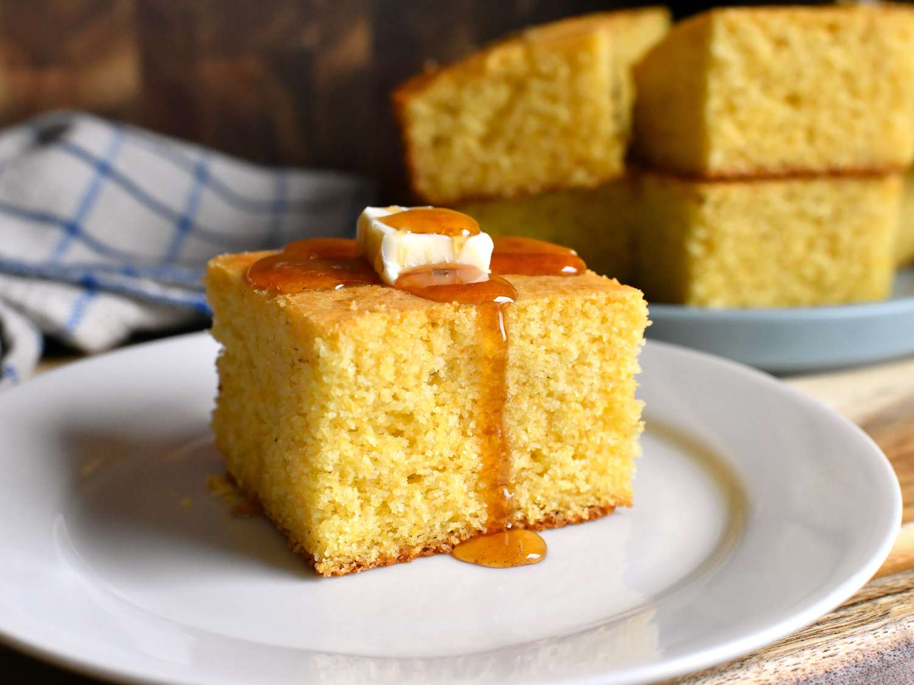

Honey Cornbread
Return to Home

Description
This honey cornbread is soft, moist, and lightly sweetened with honey for the perfect balance of savory and sweet. With a tender crumb and golden crust, it's the ideal side dish for chili, barbecue, soups, or holiday meals. Serve it warm with butter and an extra drizzle of honey for a comforting homemade favorite.
Ingredients
- 1 cup yellow cornmeal
- 1 cup all-purpose flour
- 1 tablespoon baking powder
- 1/2 teaspoon salt
- 1/4 cup granulated sugar
- 1/3 cup honey
- 1 cup whole milk
- 2 large eggs
- 1/3 cup unsalted butter, melted
- 1 teaspoon vanilla extract (optional)
- Butter and additional honey, for serving
Steps
- Preheat the oven to 400 degrees F (200 degrees C). Grease an 8-inch square baking dish or a 9-inch cast-iron skillet.
- In a large bowl, whisk together the cornmeal, flour, baking powder, salt, and sugar.
- In a separate bowl, whisk together the honey, milk, eggs, melted butter, and vanilla extract until smooth.
- Pour the wet ingredients into the dry ingredients and stir just until combined. Do not overmix.
- Spread the batter evenly into the prepared baking dish or skillet.
- Bake for 20 to 25 minutes, or until the top is golden brown and a toothpick inserted into the center comes out clean.
- Let the cornbread cool for 5 to 10 minutes before slicing.
- Serve warm with butter and an extra drizzle of honey, if desired.